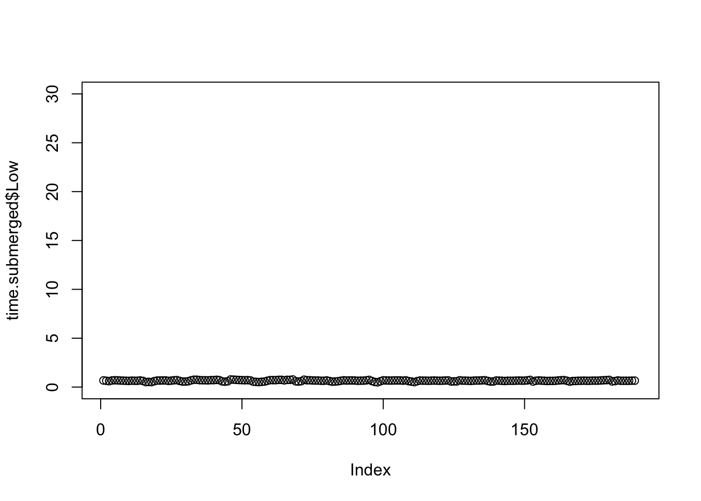

timing <- 1
setwd("~/Documents/GitHub/Bglandula_FHL_energetics/code/save_workspace")
if(timing == 1){
load("my_work_space_time1_20210409.RData")
timing <- 1}
if(timing == 2){
load("my_work_space_time2_20210409.RData")
timing <- 2}model_graphs
Set up workspace
Set the interval for single interval plots
Time 1 is from February to August. Time 2 is from August to February.
Calculate average barnacle sizes (length, cm)
mean(as.numeric(Iter.len.2[1,])) #0.23[1] 0.2319636mean(as.numeric(Iter.len.1[1,])) #0.22[1] 0.2171867Pick representative barnacles that are close to these sizes
# Iter.len.1[1,Iter.len.1[1,]>=.215&Iter.len.1[1,]<=.235] #V27 is .222, V110 is .220, V143 is .229
# Iter.len.1[1, Elevation.list[[1]]=="Mid"]#108-143
# Iter.len.1[1, Elevation.list[[1]]=="Low"]#
#
#
# Iter.len.2[1,Iter.len.2[1,]>=.205&Iter.len.2[1,]<=.235]
# Iter.len.2[1, Elevation.list[[2]]=="Upper"]#1-92 - V1 is 0.205, V32 is 0.221
# Iter.len.2[1, Elevation.list[[2]]=="Mid"]#93-108 - V94 is 0.20, V100 is 0.23
# Iter.len.2[1, Elevation.list[[2]]=="Low"]#109-138 - V124 is 0.209, V121 is 0.225
#
#
# Iter.len.2[1,Iter.len.2[1,Elevation.list[[2]]=="Mid"]>=.20&Iter.len.2[1,Elevation.list[[2]]=="Mid"]<=.225] #V114 is 0.222
# Iter.len.2[1,Iter.len.2[1,Elevation.list[[2]]=="Low"]>=.225&Iter.len.2[1,Elevation.list[[2]]=="Low"]<=.23]
#
#
# Iter.len.2[1,Elevation.list[[2]]=="Mid"]
# Iter.len.2[1,Elevation.list[[2]]=="Low"]
par(mar = c(1,1,1,1)+.1)
par(oma = c(1,4,1,1))
# Set representative barnacles ####
elev <- c(4,110,147)
elev.1 <- elev
elev <- c(36,100,121)
elev.2 <- elev
if(timing == 1){
elev <- elev.1
datetime_int <- datetimes[[1]]
Iter.len.1[1,elev] #0.21, 0.22, 0.20
cutoff <- 189 #This should be 188 or 189 but maybe I'm cutting off points twice?
length(Iter.len.1[,elev[1]])/96
}[1] 189.0104if(timing ==2){
elev <- elev.2
datetime_int <- datetimes[[2]]
length(Iter.len.2[,elev[1]])/96
cutoff <- 186 #This should be 198 - we are missing 8 days?
#cutoff <- 196
head(Iter.len.2[,elev]) #V95 (mid) was a little small, but changed rep barnacles in beginning of April
}
Elev.abbrev.list <- list(elev.1, elev.2) #Need to run timing 1 and 2Summary statistics
#Upper emergence time
no.na.water <- water.temp[!is.na(water.temp[,2]),2]
no.na.air <- air.temp[!is.na(air.temp[,2]),2]
length(no.na.air)/(length(no.na.water)+length(no.na.air))*100[1] 72.18116#Mid emergence time
no.na.water <- water.temp[!is.na(water.temp[,3]),3]
no.na.air <- air.temp[!is.na(air.temp[,3]),3]
length(no.na.air)/(length(no.na.water)+length(no.na.air))*100[1] 48.00277#Lower emergence time
no.na.water <- water.temp[!is.na(water.temp[,4]),4]
no.na.air <- air.temp[!is.na(air.temp[,4]),4]
length(no.na.air)/(length(no.na.water)+length(no.na.air))*100[1] 33.41369air.temp[max(!is.na(air.temp[,2])),1][1] "2017-08-07 01:00:00 GMT"air.temp[min(!is.na(air.temp[,2])),2]numeric(0)#max(no.na.air)
#min(no.na.water)Temp graphs
#pdf("temps_15_min_int1and2.pdf", width=6.5, height=1.5)
par(mfrow = c(1,3))
par(mar = c(1,4,1,1)+.1)
par(oma = c(1,1,1,1))
par(mfrow = c(1,3))
plot(air.temp[,4], pch = ".", col = "blue", ylim =c(0,35), ylab = "Temperature deg C")
points(water.temp[,4], pch = ".")
title("Low")
plot(air.temp[,3], pch = ".", col = "blue", ylim =c(0,35), ylab = "")
points(water.temp[,3], pch = ".")
title("Mid")
#points(intake_15min_scaled[,2], col = "green", pch = ".")
plot(air.temp[,2], pch = ".", col = "blue", ylim =c(0,35), ylab = "")
points(water.temp[,2], pch = ".")
#points(intake_15min_scaled[,3], col = "green", pch = ".")
title("Upper")
#dev.off()#Convert from UCT to PST
min(datetime_int)[1] "2018-02-04 GMT"max(datetime_int)[1] "2018-08-12 GMT"which(datetime_int>=as.POSIXct("2018-08-01 00:00:00")&datetime_int<=as.POSIXct("2018-08-02 00:00:00")) [1] 17105 17106 17107 17108 17109 17110 17111 17112 17113 17114 17115 17116
[13] 17117 17118 17119 17120 17121 17122 17123 17124 17125 17126 17127 17128
[25] 17129 17130 17131 17132 17133 17134 17135 17136 17137 17138 17139 17140
[37] 17141 17142 17143 17144 17145 17146 17147 17148 17149 17150 17151 17152
[49] 17153 17154 17155 17156 17157 17158 17159 17160 17161 17162 17163 17164
[61] 17165 17166 17167 17168 17169 17170 17171 17172 17173 17174 17175 17176
[73] 17177 17178 17179 17180 17181 17182 17183 17184 17185 17186 17187 17188
[85] 17189 17190 17191 17192 17193 17194 17195 17196 17197 17198 17199 17200
[97] 17201conv <- 17105
ts[1] 96#i_seq <- 100
dim(Iter.air)[1] 18145 153#And then again last day (repeat)
end[1] 188i_seq <- 2
i <- ts*(i_seq-1)+1
j <- i+ts-1
f <- j+1
temp_i.w <- Iter.water[(i+conv):(j+conv),]
temp_i.a <- Iter.air[(i+conv):(j+conv),]
food_i <- Iter.food[(i+conv):(j+conv)]
cost_15min_dat <- as.data.frame(cost_15min[(i+conv):(j+conv),])
intake_15min_scaled_dat <- as.data.frame(intake_15min_scaled[(i+conv):(j+conv),])
pred_expose_30_dat <- as.data.frame(pred_expose_30[(i+conv):(j+conv),])
Hour <- seq(1, to = 96*15, by = 15)/60if(timing == 2){
#setwd("~/Box/Sarah and Molly's Box/FHL data/plots/Interval 2")
#pdf("within_day_rates_15_min_int2.pdf", width=6.5, height=1.5)
par(mfrow = c(1,3))
par(mar = c(1,4,1,1)+.1)
par(oma = c(1,1,1,1))
par(mfrow = c(1,3))
par(mfrow = c(1,3))
plot(Hour,cost_15min_dat[,elev[3]], ylim = c(0,.35), col = "blue", type = "l", ylab = "Physiological Rate (J per 15min)",bty = "n")
points(Hour,intake_15min_scaled_dat[,elev[3]], col = "green", type = "l",bty = "n")
points(Hour,pred_expose_30_dat[,elev[3]], col = "darkorchid4", type = "l",bty = "n")
plot(Hour,cost_15min_dat[,elev[2]], ylim = c(0,.35),col = "blue", ylab = "", type = "l",bty = "n")
points(Hour,intake_15min_scaled_dat[,elev[2]], col = "green", type = "l",bty = "n")
points(Hour,pred_expose_30_dat[,elev[2]], col = "darkorchid4", type = "l",bty = "n")
plot(Hour,cost_15min_dat[,elev[1]], ylim = c(0,.35),col = "blue",
ylab = "", type = "l",bty = "n")
points(Hour,intake_15min_scaled_dat[,elev[1]], col = "green", type = "l")
points(Hour,pred_expose_30_dat[, elev[1]], col = "darkorchid4", type = "l")
#dev.off()
}if(timing == 1){
# setwd("~/Box/Sarah and Molly's Box/FHL data/plots/Interval 1")
#pdf("within_day_rates_15_min_int1.pdf", width=6.5, height=1.5)
par(mfrow = c(1,3))
par(mar = c(1,4,1,1)+.1)
par(oma = c(1,1,1,1))
par(mfrow = c(1,3))
par(mfrow = c(1,3))
plot(Hour,cost_15min_dat[,elev[3]], ylim = c(0,.15),col = "blue", type = "l", ylab = "Physiological Rate (J per 15min)",bty = "n")
points(Hour,intake_15min_scaled_dat[,elev[3]], col = "green", type = "l",bty = "n")
points(Hour,pred_expose_30_dat[,elev[3]], col = "darkorchid4", type = "l",bty = "n")
plot(Hour,cost_15min_dat[,elev[2]], ylim = c(0,.15), col = "blue",ylab = "", type = "l",bty = "n")
points(Hour,intake_15min_scaled_dat[,elev[2]], col = "green", type = "l",bty = "n")
points(Hour,pred_expose_30_dat[,elev[2]], col = "darkorchid4", type = "l",bty = "n")
plot(Hour,cost_15min_dat[,elev[1]], ylim = c(0,.15),col = "blue",
ylab = "", type = "l",bty = "n")
points(Hour,intake_15min_scaled_dat[,elev[1]], col = "green", type = "l")
points(Hour,pred_expose_30_dat[, elev[1]], col = "darkorchid4", type = "l")
#dev.off()
}
if(timing ==1){
# setwd("~/Box/Sarah and Molly's Box/FHL data/plots/Interval 1")
#pdf("within_day_temps_15min_int1.pdf", width=6.5, height=1.5)
par(mfrow = c(1,3))
par(mar = c(1,4,1,1)+.1)
par(oma = c(1,1,1,1))
par(mfrow = c(1,3))
plot(Hour,temp_i.a[,elev[3]],ylim = c(2,30),type = "l",bty = "n",ylab = "Temp", col = "darkorchid4")
points(Hour,temp_i.w[,elev[3]], col = "blue",type = "l",bty = "n",ylab = "")
plot(Hour,temp_i.a[,elev[2]],ylim = c(2,30),type = "l",bty = "n",ylab = "", col = "darkorchid4")
points(Hour,temp_i.w[,elev[2]], col = "blue",type = "l",bty = "n",ylab = "")
plot(Hour,temp_i.a[,elev[1]], ylim = c(2,30),type = "l",bty = "n",ylab = "", col = "darkorchid4")
points(Hour,temp_i.w[,elev[1]], col = "blue",type = "l",bty = "n",ylab = "")
#dev.off()
}
if(timing ==2){
# setwd("~/Box/Sarah and Molly's Box/FHL data/plots/Interval 2")
#pdf("within_day_temps_15min_int2.pdf", width=6.5, height=1.5)
par(mfrow = c(1,3))
par(mar = c(1,4,1,1)+.1)
par(oma = c(1,1,1,1))
par(mfrow = c(1,3))
plot(Hour,temp_i.a[,elev[3]],ylim = c(2,30),type = "l",bty = "n",ylab = "Temp", col = "darkorchid4")
points(Hour,temp_i.w[,elev[3]], col = "blue",type = "l",bty = "n",ylab = "")
plot(Hour,temp_i.a[,elev[2]],ylim = c(2,30),type = "l",bty = "n",ylab = "", col = "darkorchid4")
points(Hour,temp_i.w[,elev[2]], col = "blue",type = "l",bty = "n",ylab = "")
plot(Hour,temp_i.a[,elev[1]], ylim = c(2,30),type = "l",bty = "n",ylab = "", col = "darkorchid4")
points(Hour,temp_i.w[,elev[1]], col = "blue",type = "l",bty = "n",ylab = "")
#dev.off()
}# Physiological rates over 1 day, end ####
# This isn't computing for both beginning and end separately I don't think.
ts[1] 96#i_seq <- 100
dim(Iter.air)[1] 18145 153#And then again last day (repeat)
end[1] 188i_seq <- end
i <- ts*(i_seq-1)+1
j <- i+ts-1
f <- j+1
temp_i.w <- Iter.water[i:j,]
temp_i.a <- Iter.air[i:j,]
food_i <- Iter.food[i:j]
cost_15min_dat <- as.data.frame(cost_15min[i:j,])
intake_15min_scaled_dat <- as.data.frame(intake_15min_scaled[i:j,])
pred_expose_30_dat <- as.data.frame(pred_expose_30[i:j,])
Hour <- seq(1, to = 96*15, by = 15)/60
if(timing == 1){
#setwd("~/Box/Sarah and Molly's Box/FHL data/plots/Interval 1")
#pdf("within_day_rates_15_min_int1_end.pdf", width=6.5, height=1.5)
par(mfrow = c(1,3))
par(mar = c(1,4,1,1)+.1)
par(oma = c(1,1,1,1))
par(mfrow = c(1,3))
par(mfrow = c(1,3))
plot(Hour,cost_15min_dat[,elev[3]], ylim = c(0,.15), col = "blue", type = "l", ylab = "Physiological Rate (J per 15min)",bty = "n")
points(Hour,intake_15min_scaled_dat[,elev[3]], col = "green", type = "l",bty = "n")
points(Hour,pred_expose_30_dat[,elev[3]], col = "darkorchid4", type = "l",bty = "n")
plot(Hour,cost_15min_dat[,elev[2]], ylim = c(0,.15), col = "blue", ylab = "", type = "l",bty = "n")
points(Hour,intake_15min_scaled_dat[,elev[2]], col = "green", type = "l",bty = "n")
points(Hour,pred_expose_30_dat[,elev[2]], col = "darkorchid4", type = "l",bty = "n")
plot(Hour,cost_15min_dat[,elev[1]], ylim = c(0,.15),
ylab = "", type = "l",bty = "n", col = "blue",)
points(Hour,intake_15min_scaled_dat[,elev[1]], col = "green", type = "l")
points(Hour,pred_expose_30_dat[, elev[1]], col = "darkorchid4", type = "l")
#dev.off()
}
if(timing == 2){
#setwd("~/Box/Sarah and Molly's Box/FHL data/plots/Interval 2")
#pdf("within_day_rates_15_min_int2_end.pdf", width=6.5, height=1.5)
par(mfrow = c(1,3))
par(mar = c(1,4,1,1)+.1)
par(oma = c(1,1,1,1))
par(mfrow = c(1,3))
par(mfrow = c(1,3))
plot(Hour,cost_15min_dat[,elev[3]], ylim = c(0,.15),col = "blue", type = "l", ylab = "Physiological Rate (J per 15min)",bty = "n")
points(Hour,intake_15min_scaled_dat[,elev[3]], col = "green", type = "l",bty = "n")
points(Hour,pred_expose_30_dat[,elev[3]], col = "darkorchid4", type = "l",bty = "n")
plot(Hour,cost_15min_dat[,elev[2]], ylim = c(0,.15), col = "blue", ylab = "", type = "l",bty = "n")
points(Hour,intake_15min_scaled_dat[,elev[2]], col = "green", type = "l",bty = "n")
points(Hour,pred_expose_30_dat[,elev[2]], col = "darkorchid4", type = "l",bty = "n")
plot(Hour,cost_15min_dat[,elev[1]], ylim = c(0,.15),
ylab = "", type = "l",bty = "n",col = "blue",)
points(Hour,intake_15min_scaled_dat[,elev[1]], col = "green", type = "l")
points(Hour,pred_expose_30_dat[, elev[1]], col = "darkorchid4", type = "l")
#dev.off()
}if(timing == 1){
#setwd("~/Box/Sarah and Molly's Box/FHL data/plots/Interval 1")
#pdf("within_day_temps_15min_int1_end.pdf", width=6.5, height=1.5)
par(mfrow = c(1,3))
par(mar = c(1,4,1,1)+.1)
par(oma = c(1,1,1,1))
par(mfrow = c(1,3))
plot(Hour,temp_i.a[,elev[3]],ylim = c(2,30),type = "l",bty = "n",ylab = "Temp", col ="darkorchid4")
points(Hour,temp_i.w[,elev[3]], col = "blue",type = "l",bty = "n",ylab = "")
plot(Hour,temp_i.a[,elev[2]],ylim = c(2,30),type = "l",bty = "n",ylab = "", col = "darkorchid4")
points(Hour,temp_i.w[,elev[2]], col = "blue",type = "l",bty = "n",ylab = "")
plot(Hour,temp_i.a[,elev[1]], ylim = c(2,30),type = "l",bty = "n",ylab = "", col = "darkorchid4")
points(Hour,temp_i.w[,elev[1]], col = "blue",type = "l",bty = "n",ylab = "")
#dev.off()
}
if(timing == 2){
#setwd("~/Box/Sarah and Molly's Box/FHL data/plots/Interval 2")
#pdf("within_day_temps_15min_int2_end.pdf", width=6.5, height=1.5)
par(mfrow = c(1,3))
par(mar = c(1,4,1,1)+.1)
par(oma = c(1,1,1,1))
par(mfrow = c(1,3))
plot(Hour,temp_i.a[,elev[3]],ylim = c(2,30),type = "l",bty = "n",ylab = "Temp", col = "darkorchid4")
points(Hour,temp_i.w[,elev[3]], col = "blue",type = "l",bty = "n",ylab = "")
plot(Hour,temp_i.a[,elev[2]],ylim = c(2,30),type = "l",bty = "n",ylab = "", col = "darkorchid4")
points(Hour,temp_i.w[,elev[2]], col = "blue",type = "l",bty = "n",ylab = "")
plot(Hour,temp_i.a[,elev[1]], ylim = c(2,30),type = "l",bty = "n",ylab = "", col = "darkorchid4")
points(Hour,temp_i.w[,elev[1]], col = "blue",type = "l",bty = "n",ylab = "")
#dev.off()
}Growth curve
# Growth curve ####
if(timing == 1){
#setwd("~/Box/Sarah and Molly's Box/FHL data/plots/Interval 1")
#pdf("Length_pred_int1.pdf", width=4, height=4)
par(mfrow = c(1,1))
#plot(matrix(seq(1, length(Iter.len.day), by = 1), nrow = length(Iter.len.day), ncol = Iter.len.day[,names(temp_i.a)=="Upper"]),Iter.len.day[,names(temp_i.a)=="Upper"], ylim = c(0,5), pch = ".", ylab = "Length (mm)", xlab = "Day") #Upper
plot(Iter.len.day[,elev[1]], col = "black", type = "l", ylim = c(1,4), ylab = "Length (mm)", xlab = "Day") #Upper
lines(Iter.len.day[,elev[2]], col = "purple") #Mid
lines(Iter.len.day[,elev[3]], col = "orange") #Low
#dev.off()
mass <- 10^(0.4864*(Iter.len.day[,elev])-0.7912)
joule_mass <- mass * ED_J_p_mg
#pdf("Joule_pred_int1.pdf", width=4, height=4)
par(mfrow = c(1,1))
#plot(matrix(seq(1, length(Iter.len.day), by = 1), nrow = length(Iter.len.day), ncol = Iter.len.day[,names(temp_i.a)=="Upper"]),Iter.len.day[,names(temp_i.a)=="Upper"], ylim = c(0,5), pch = ".", ylab = "Length (mm)", xlab = "Day") #Upper
plot(joule_mass[,1], col = "black", type = "l",
ylim = c(0,120),
ylab = "Energy content (J)", xlab = "Day") #Upper
lines(joule_mass[,2], col = "purple") #Mid
lines(joule_mass[,3], col = "orange") #Low
#dev.off()
}if(timing == 2){
#setwd("~/Box/Sarah and Molly's Box/FHL data/plots/Interval 2")
#pdf("Length_pred_int2.pdf", width=4, height=4)
par(mfrow = c(1,1))
#plot(matrix(seq(1, length(Iter.len.day), by = 1), nrow = length(Iter.len.day), ncol = Iter.len.day[,names(temp_i.a)=="Upper"]),Iter.len.day[,names(temp_i.a)=="Upper"], ylim = c(0,5), pch = ".", ylab = "Length (mm)", xlab = "Day") #Upper
plot(Iter.len.day[,elev[1]], col = "black", type = "l", ylim = c(1,4), ylab = "Length (mm)", xlab = "Day") #Upper
lines(Iter.len.day[,elev[2]], col = "purple") #Mid
lines(Iter.len.day[,elev[3]], col = "orange") #Low
#dev.off()
mass <- 10^(0.4864*(Iter.len.day[,elev])-0.7912)
joule_mass <- mass * ED_J_p_mg
#pdf("Joule_pred_int2.pdf", width=4, height=4)
par(mfrow = c(1,1))
#plot(matrix(seq(1, length(Iter.len.day), by = 1), nrow = length(Iter.len.day), ncol = Iter.len.day[,names(temp_i.a)=="Upper"]),Iter.len.day[,names(temp_i.a)=="Upper"], ylim = c(0,5), pch = ".", ylab = "Length (mm)", xlab = "Day") #Upper
plot(joule_mass[,1], col = "black", type = "l",
ylim = c(0,120),
ylab = "Energy content (J)", xlab = "Day") #Upper
lines(joule_mass[,2], col = "purple") #Mid
lines(joule_mass[,3], col = "orange") #Low
#dev.off()
}#Observed vs. predicted growth
if(timing == 1){
#setwd("~/Box/Sarah and Molly's Box/FHL data/plots/Interval 1")
# pdf("Pred_vs_Obs_int1.pdf", width=4, height=4)
means_Obslen <- tapply(obs.growth.len, as.factor(Elevation), mean)
means_Predlen <- tapply(pred.len, as.factor(Elevation), mean)
sd_Obslen <- tapply(obs.growth.len, as.factor(Elevation), sd)
sd_Predlen <- tapply(pred.len, as.factor(Elevation), sd)
par(mfrow = c(1,1))
plot(means_Predlen ~ means_Obslen, xlim = c(0,1.5), ylim = c(0,1.5),
col = c("orange","purple","black"),
#pch = c(15,16,17), for time 2
pch = c(0,1,2), #for time 1
ylab = "Predicted growth (mm)",
xlab = "Observed growth (mm)")
lines(x = c(-1,2.5),y = c(-1,2.5))
arrows(x0=means_Obslen, y0=means_Predlen-sd_Predlen, x1=means_Obslen,
y1=means_Predlen+sd_Predlen, code=0)
arrows(x0=means_Obslen-sd_Obslen, y0=means_Predlen, x1=means_Obslen+sd_Obslen,
y1=means_Predlen, code=0)
#dev.off()
}
if(timing == 2){
#setwd("~/Box/Sarah and Molly's Box/FHL data/plots/Interval 2")
#pdf("Pred_vs_Obs_int2.pdf", width=4, height=4)
means_Obslen <- tapply(obs.growth.len, as.factor(Elevation), mean)
means_Predlen <- tapply(pred.len, as.factor(Elevation), mean)
sd_Obslen <- tapply(obs.growth.len, as.factor(Elevation), sd)
sd_Predlen <- tapply(pred.len, as.factor(Elevation), sd)
par(mfrow = c(1,1))
plot(means_Predlen ~ means_Obslen, xlim = c(0,1.5), ylim = c(0,1.5),
col = c("orange","purple","black"),
pch = c(15,16,17),
#pch = c(0,1,2), #for time 1
ylab = "Predicted growth (mm)",
xlab = "Observed growth (mm)")
lines(x = c(-1,2.5),y = c(-1,2.5))
arrows(x0=means_Obslen, y0=means_Predlen-sd_Predlen, x1=means_Obslen,
y1=means_Predlen+sd_Predlen, code=0)
arrows(x0=means_Obslen-sd_Obslen, y0=means_Predlen, x1=means_Obslen+sd_Obslen,
y1=means_Predlen, code=0)
# dev.off()
}# Physiological rates in terms of day ####
# new_intake in terms of date ####
length(datetime_int)/96[1] 189.0104pred_expose_30_dat2 <- cbind(as.data.frame(pred_expose_30)[,elev], datetime = datetime_int[1:nrow(pred_expose_30)])
intake_dat2 <- cbind(as.data.frame(intake_15min_scaled)[elev], datetime = datetime_int[1:nrow(intake_15min_scaled)])
cost_15min_dat2 <- cbind(as.data.frame(cost_15min)[elev], datetime = datetime_int[1:nrow(cost_15min)])
head(pred_expose_30_dat2) V4 V110 V147 datetime
1 0.008541651 0 0 2018-02-04 00:00:00
2 0.008515642 0 0 2018-02-04 00:15:00
3 0.008494708 0 0 2018-02-04 00:30:00
4 0.008469010 0 0 2018-02-04 00:45:00
5 0.008458579 0 0 2018-02-04 01:00:00
6 0.008437745 0 0 2018-02-04 01:15:00# Note 5.2023 - had to swap time 1 vs. time 2
if(timing ==1){
new_expose <- pred_expose_30_dat2 %>%
group_by(date = as.Date(ymd_hms(datetime))) %>%
dplyr::summarise(V1 = sum(V4),
V2 = sum(V110),
V3 = sum(V147))
new_intake <- intake_dat2 %>%
group_by(date = as.Date(ymd_hms(datetime))) %>%
dplyr::summarise(V1 = sum(V4),
V2 = sum(V110),
V3 = sum(V147))
new_aq_cost <- cost_15min_dat2 %>%
group_by(date = as.Date(ymd_hms(datetime))) %>%
dplyr::summarise(V1 = sum(V4),
V2 = sum(V110),
V3 = sum(V147))
}
if(timing == 2){
new_expose <- pred_expose_30_dat2 %>%
group_by(date = as.Date(ymd_hms(datetime))) %>%
dplyr::summarise(V1 = sum(V36),
V2 = sum(V100),
V3 = sum(V121))
new_intake <- intake_dat2 %>%
group_by(date = as.Date(ymd_hms(datetime))) %>%
dplyr::summarise(V1 = sum(V36),
V2 = sum(V100),
V3 = sum(V121))
new_aq_cost <- cost_15min_dat2 %>%
group_by(date = as.Date(ymd_hms(datetime))) %>%
dplyr::summarise(V1 = sum(V36),
V2 = sum(V100),
V3 = sum(V121))
}
daily_SFG <- new_intake[,2:4] - new_expose[,2:4] - new_aq_cost[,2:4]
names(new_intake) <- c("date","Upper", "Mid", "Low")
names(new_expose) <- c("date","Upper", "Mid", "Low")
names(new_aq_cost) <- c("date","Upper", "Mid", "Low")
names(daily_SFG) <- c("Upper", "Mid", "Low")
#Don't plot initial and final timepoint, because not a complete timepoint
new_intake <- new_intake[2:cutoff,]
new_expose <- new_expose[2:cutoff,]
new_aq_cost <- new_aq_cost[2:cutoff,]
daily_SFG <- daily_SFG[2:cutoff,]
tail(new_intake)# A tibble: 6 4
date Upper Mid Low
<date> <dbl> <dbl> <dbl>
1 2018-08-06 1.75 2.01 2.13
2 2018-08-07 2.42 2.29 2.13
3 2018-08-08 3.27 2.31 2.10
4 2018-08-09 4.21 2.35 2.08
5 2018-08-10 4.45 2.42 2.12
6 2018-08-11 0 0 0 head(new_intake)# A tibble: 6 4
date Upper Mid Low
<date> <dbl> <dbl> <dbl>
1 2018-02-05 0.810 0.879 0.766
2 2018-02-06 0.773 0.627 0.720
3 2018-02-07 0.695 0.570 0.812
4 2018-02-08 0.861 1.13 0.849
5 2018-02-09 0.450 1.11 0.839
6 2018-02-10 0 1.09 0.813dim(new_intake)[1] 188 4Plot physiological rates
if(timing == 1){
#pdf("daily_physiological_rates_int1.pdf", width=6.5, height=1.5)
par(mfrow = c(1,3))
par(mar = c(1,1,1,1)+.1)
par(oma = c(1,4,1,1))
plot(new_intake$date, new_intake$Low, type = "l", ylim = c(0,4.5),yaxs = "i",
col = "darkslategray", xlab = "", ylab = "Physiological rate (J / day)", bty = "n", lty = 1)
points(new_intake$date, new_aq_cost$Low, type = "l", col = "blue", lty = 1)
points(new_intake$date, new_expose$Low, type = "l", col = "darkorchid4", lty = 1, lwd = 1.5)
legend(x = "topleft",
legend = c("Intake", "Aquatic cost", "Aerial cost"),
col =c("darkslategray", "blue", "darkorchid4"), lty=1:1, box.lty=0, bg="transparent", bty = "n")
plot(new_intake$date, new_intake$Mid, type = "l", ylim = c(0,4.5),yaxs = "i",
col = "darkslategray", xlab = "", ylab = "Physiological rate\n (J / day)", bty = "n")
points(new_intake$date, new_aq_cost$Mid, type = "l", col = "blue")
points(new_intake$date, new_expose$Mid, type = "l", col = "darkorchid4", lwd = 1.5)
plot(new_intake$date, new_intake$Upper, type = "l", ylim = c(0,4.5), yaxs = "i",
col = "darkslategray", xlab = "", ylab = "Physiological rate (J / day)", bty = "n")
points(new_intake$date, new_aq_cost$Upper, type = "l", col = "blue")
points(new_intake$date, new_expose$Upper, type = "l", col = "darkorchid4", lwd = 1.5)
#dev.off()
}if(timing == 2){
#pdf("daily_physiological_rates_int2.pdf", width=6.5, height=1.5)
par(mfrow = c(1,3))
par(mar = c(1,1,1,1)+.1)
par(oma = c(1,4,1,1))
plot(new_intake$date, new_intake$Low, type = "l", ylim = c(0,4.5),yaxs = "i",
col = "darkslategray", xlab = "", ylab = "Physiological rate (J / day)", bty = "n", lty = 1)
points(new_intake$date, new_aq_cost$Low, type = "l", col = "blue", lty = 1)
points(new_intake$date, new_expose$Low, type = "l", col = "darkorchid4", lty = 1, lwd = 1.5)
legend(x = "topleft",
legend = c("Intake", "Aquatic cost", "Aerial cost"),
col =c("darkslategray", "blue", "darkorchid4"), lty=1:1, box.lty=0, bg="transparent", bty = "n")
plot(new_intake$date, new_intake$Mid, type = "l", ylim = c(0,4.5),yaxs = "i",
col = "darkslategray", xlab = "", ylab = "Physiological rate\n (J / day)", bty = "n")
points(new_intake$date, new_aq_cost$Mid, type = "l", col = "blue")
points(new_intake$date, new_expose$Mid, type = "l", col = "darkorchid4", lwd = 1.5)
plot(new_intake$date, new_intake$Upper, type = "l", ylim = c(0,4.5), yaxs = "i",
col = "darkslategray", xlab = "", ylab = "Physiological rate (J / day)", bty = "n")
points(new_intake$date, new_aq_cost$Upper, type = "l", col = "blue")
points(new_intake$date, new_expose$Upper, type = "l", col = "darkorchid4", lwd = 1.5)
#dev.off()
}Plot Scope for Growth
if(timing == 1){
#pdf("daily_SFG_int1.pdf", width=6.5, height=1.5)
par(mfrow = c(1,3))
par(mar = c(1,1,1,1)+.1)
par(oma = c(1,4,1,1))
par(mfrow = c(1,3))
dim(daily_SFG)
plot(new_intake$date, daily_SFG$Low,type = "l", ylim = c(-.9,4.5), yaxs = "i",
col = "orange", xlab = "", ylab = "Physiological rate (J / day)", bty = "n")
legend(x = "topleft",
legend = c("Scope for Growth"),
col =c("orange"), lty=1:1, box.lty=0, bg="transparent", bty = "n")
plot(new_intake$date, daily_SFG$Mid,type = "l", ylim = c(-.9,4.5), yaxs = "i",
col = "orange", xlab = "", ylab = "Physiological rate (J / day)", bty = "n")
plot(new_intake$date, daily_SFG$Upper,type = "l", ylim = c(-.9,4.5), yaxs = "i",
col = "orange", xlab = "", ylab = "Physiological rate (J / day)", bty = "n")
#dev.off()
}if(timing == 2){
#pdf("daily_SFG_int2.pdf", width=6.5, height=1.5)
par(mfrow = c(1,3))
par(mar = c(1,1,1,1)+.1)
par(oma = c(1,4,1,1))
par(mfrow = c(1,3))
dim(daily_SFG)
plot(new_intake$date, daily_SFG$Low,type = "l", ylim = c(-.9,4.5), yaxs = "i",
col = "orange", xlab = "", ylab = "Physiological rate (J / day)", bty = "n")
legend(x = "topleft",
legend = c("Scope for Growth"),
col =c("orange"), lty=1:1, box.lty=0, bg="transparent", bty = "n")
plot(new_intake$date, daily_SFG$Mid,type = "l", ylim = c(-.9,4.5), yaxs = "i",
col = "orange", xlab = "", ylab = "Physiological rate (J / day)", bty = "n")
plot(new_intake$date, daily_SFG$Upper,type = "l", ylim = c(-.9,4.5), yaxs = "i",
col = "orange", xlab = "", ylab = "Physiological rate (J / day)", bty = "n")
#dev.off()
}New plot that overlays cumulative SFG (5/4/23)
par(mfrow = c(1,3))
par(mar = c(1,1,1,1)+.1)
par(oma = c(1,4,1,1))
par(mfrow = c(1,3))
# pdf("daily_SFG_int_cumulative.pdf", width=6.5, height=1.5, units = "in")
if(timing == 1){
length(new_intake$date)
str(joule_mass)
new.joule_mass <- as.data.frame(lapply(joule_mass, function(x) c(x[1], x[-1] - x[1])))
new.joule_mass[2:189,]
plot(new_intake$date, daily_SFG$Low,type = "l", ylim = c(-1,4), yaxs = "i",
col = "orange", xlab = "", ylab = "Physiological rate (J / day)", bty = "n")
par(new=TRUE)
plot(new_intake$date,new.joule_mass[2:189,3], col = "black",type = "l", ylim = c(-13,60),axes=FALSE,bty = "n") #Low
#axis(side = 4)
legend(x = "topleft",
legend = c("Daily SFG", "Cumulative SFG"),
col =c("orange","black"), lty=1:1, box.lty=0, bg="transparent", bty = "n")
plot(new_intake$date, daily_SFG$Mid,type = "l", ylim = c(-1,4), yaxs = "i",
col = "orange", xlab = "", ylab = "Physiological rate (J / day)", bty = "n")
par(new=TRUE)
plot(new_intake$date,new.joule_mass[2:189,2], col = "black",type = "l", ylim = c(-13,60),axes=FALSE,bty = "n") #Low
#axis(side = 4)
plot(new_intake$date, daily_SFG$Upper,type = "l", ylim = c(-1,4), yaxs = "i",
col = "orange", xlab = "", ylab = "Physiological rate (J / day)", bty = "n")
par(new=TRUE)
plot(new_intake$date,new.joule_mass[2:189,1], col = "black",type = "l", ylim = c(-13,60),axes=FALSE,bty = "n") #Low
axis(side = 4)
}'data.frame': 189 obs. of 3 variables:
$ V4 : num 39 39.1 39.1 39.2 39.1 ...
$ V110: num 43.1 43.2 43.3 43.3 43.2 ...
$ V147: num 36.1 36.3 36.5 36.6 36.9 ...
# dev.off()
# pdf("daily_SFG_int2.pdf", width=6.5, height=1.5)
# pngfile <- fs::path(knitr::fig_path(), "scaling.png")
# agg_png(pngfile, width = 6.5, height = 1.5, units = "in", res = 300, scaling = 3)
# plot(p)
# invisible(dev.off())
# knitr::include_graphics(pngfile)if(timing == 2){
#pdf("daily_SFG_int2.pdf", width=6.5, height=1.5)
par(mfrow = c(1,3))
par(mar = c(1,1,1,1)+.1)
par(oma = c(1,4,1,1))
par(mfrow = c(1,3))
length(new_intake$date)
str(joule_mass)
new.joule_mass <- as.data.frame(lapply(joule_mass, function(x) c(x[1], x[-1] - x[1])))
new.joule_mass[2:189,]
plot(new_intake$date, daily_SFG$Low,type = "l", ylim = c(-1,4), yaxs = "i",
col = "orange", xlab = "", ylab = "Physiological rate (J / day)", bty = "n")
par(new=TRUE)
plot(new_intake$date,new.joule_mass[2:189,3], col = "black",type = "l", ylim = c(-13,60),axes=FALSE,bty = "n") #Low
#axis(side = 4)
legend(x = "topleft",
legend = c("Daily SFG", "Cumulative SFG"),
col =c("orange","black"), lty=1:1, box.lty=0, bg="transparent", bty = "n")
plot(new_intake$date, daily_SFG$Mid,type = "l", ylim = c(-1,4), yaxs = "i",
col = "orange", xlab = "", ylab = "Physiological rate (J / day)", bty = "n")
par(new=TRUE)
plot(new_intake$date,new.joule_mass[2:189,2], col = "black",type = "l", ylim = c(-13,60),axes=FALSE,bty = "n") #Low
#axis(side = 4)
plot(new_intake$date, daily_SFG$Upper,type = "l", ylim = c(-1,4), yaxs = "i",
col = "orange", xlab = "", ylab = "Physiological rate (J / day)", bty = "n")
par(new=TRUE)
plot(new_intake$date,new.joule_mass[2:189,1], col = "black",type = "l", ylim = c(-13,60),axes=FALSE,bty = "n") #Low
axis(side = 4)
#dev.off()
}# Calc daily air and water temp ####
# Look to see if/where data is missing
plot(air.temp.2$datetime,air.temp.2$Low, type = "p", pch = ".", xlim = c(as.POSIXct("2018-08-10"),as.POSIXct("2018-12-01")))
points(water.temp.2$datetime,water.temp.2$Low, type = "p", pch = ".", xlim = c(as.POSIXct("2018-08-10"),as.POSIXct("2018-11-01")))# Aug 22 - Aug 25
if(timing == 1){
air.temp.int <- air.temp.1
water.temp.int <- water.temp.1
#setwd("~/Box/Sarah and Molly's Box/FHL data/plots/Interval 1")
}
if(timing == 2){
air.temp.int <- air.temp.2
water.temp.int <- water.temp.2
#setwd("~/Box/Sarah and Molly's Box/FHL data/plots/Interval 2")
}
daily_air_temp <- air.temp.int %>%
group_by(date = as.Date(ymd_hms(datetime))) %>%
dplyr::summarise(Low = mean(Low, na.rm = TRUE),
Mid = mean(Mid, na.rm = TRUE),
Upper = mean(Upper, na.rm = TRUE))
daily_air_temp# A tibble: 190 4
date Low Mid Upper
<date> <dbl> <dbl> <dbl>
1 2018-02-04 8.62 11.6 9.88
2 2018-02-05 8.09 9.51 9.28
3 2018-02-06 7.90 8.01 8.00
4 2018-02-07 7.93 7.93 7.89
5 2018-02-08 10.1 11.1 10.1
6 2018-02-09 11.0 11.4 9.14
7 2018-02-10 6.78 8.21 7.92
8 2018-02-11 6.06 7.45 9.11
9 2018-02-12 5.37 6.89 9.08
10 2018-02-13 3.98 6.12 7.54
# with 180 more rowsdaily_water_temp <- water.temp.int %>%
group_by(date = as.Date(ymd_hms(datetime))) %>%
dplyr::summarise(Low = mean(Low, na.rm = TRUE),
Mid = mean(Mid, na.rm = TRUE),
Upper = mean(Upper, na.rm = TRUE))
# Upper 75% quantile ####
#A quartile is the value of the quantile at the probabilities 0.25, 0.5 and 0.75.
#https://stackoverflow.com/questions/26532566/quantile-vs-quartile-in-lay-terms
daily_air_temp_quant <- air.temp.int %>%
group_by(date = as.Date(ymd_hms(datetime))) %>%
dplyr::summarise(Low = quantile(Low, probs = 0.75, na.rm = TRUE),
Mid = quantile(Mid, probs = 0.75, na.rm = TRUE),
Upper = quantile(Upper, probs = 0.75, na.rm = TRUE))
daily_air_temp_quant_low <- air.temp.int %>%
group_by(date = as.Date(ymd_hms(datetime))) %>%
dplyr::summarise(Low = quantile(Low, probs = 0.25, na.rm = TRUE),
Mid = quantile(Mid, probs = 0.25, na.rm = TRUE),
Upper = quantile(Upper, probs = 0.25, na.rm = TRUE))
daily_air_temp <- daily_air_temp[2:cutoff,]
daily_water_temp <- daily_water_temp[2:cutoff,]
daily_air_temp_quant <- daily_air_temp_quant[2:cutoff,]
daily_air_temp_quant_low <- daily_air_temp_quant_low[2:cutoff,]
# Plot temp, 6.5X1.5 ####
# Note dimensions must be called within pdf() - also saving as a .pdf through th GUI is broken. #pdf("temp_incl_3Q.pdf", width=6.5, height=1.5)
par(mfrow = c(1,3))
par(mar = c(1,1,1,1)+.1)
par(oma = c(1,4,1,1))
min(daily_air_temp$Mid, na.rm = TRUE)[1] 4.574233plot(daily_air_temp$date, daily_air_temp$Low, type = "l", ylim = c(0,32),yaxs = "i",
col = "darkorchid4", xlab = "", ylab = expression(paste("Temp (",degree,"C)")), bty = "n", lty = 1)
points(daily_water_temp$date, daily_water_temp$Low, type = "l", col = "blue", lty = 1)
points(daily_air_temp_quant$date, daily_air_temp_quant$Low, type = "l", yaxs = "i",
col = "darkred", xlab = "", ylab = "Physiological rate (J / day)", bty = "n", lty = 3)
plot(daily_air_temp$date, daily_air_temp$Mid, type = "l", ylim = c(0,32),yaxs = "i",
col = "darkorchid4", xlab = "", ylab = "", bty = "n")
points(daily_water_temp$date, daily_water_temp$Mid, type = "l", col = "blue")
points(daily_air_temp_quant$date, daily_air_temp_quant$Mid, type = "l", yaxs = "i",
col = "darkred", xlab = "", ylab = "Physiological rate (J / day)", bty = "n", lty = 3)
plot(daily_air_temp$date, daily_air_temp$Upper, type = "l", ylim = c(0,32), yaxs = "i",
col = "darkorchid4", xlab = "", ylab = "", bty = "n")
points(daily_water_temp$date, daily_water_temp$Upper, type = "l", col = "blue")
points(daily_air_temp_quant$date, daily_air_temp_quant$Upper, type = "l", yaxs = "i",
col = "darkred", xlab = "", ylab = "Physiological rate (J / day)", bty = "n", lty = 3)
#dev.off()#pdf("temp_incl_3Q.pdf", width=6.5, height=1.5)
par(mfrow = c(1,3))
par(mar = c(1,1,1,1)+.1)
par(oma = c(1,4,1,1))
min(daily_air_temp$Mid, na.rm = TRUE)[1] 4.574233plot(daily_air_temp$date, daily_air_temp$Low, type = "l", ylim = c(0,32),yaxs = "i",
col = "darkorchid4", xlab = "", ylab = expression(paste("Temp (",degree,"C)")), bty = "n", lty = 1)
points(daily_water_temp$date, daily_water_temp$Low, type = "l", col = "blue", lty = 1)
points(daily_air_temp_quant$date, daily_air_temp_quant$Low, type = "l", yaxs = "i",
col = "darkred", xlab = "", ylab = "Physiological rate (J / day)", bty = "n", lty = 3)
plot(daily_air_temp$date, daily_air_temp$Mid, type = "l", ylim = c(0,32),yaxs = "i",
col = "darkorchid4", xlab = "", ylab = "", bty = "n")
points(daily_water_temp$date, daily_water_temp$Mid, type = "l", col = "blue")
points(daily_air_temp_quant$date, daily_air_temp_quant$Mid, type = "l", yaxs = "i",
col = "darkred", xlab = "", ylab = "Physiological rate (J / day)", bty = "n", lty = 3)
plot(daily_air_temp$date, daily_air_temp$Upper, type = "l", ylim = c(0,32), yaxs = "i",
col = "darkorchid4", xlab = "", ylab = "", bty = "n")
points(daily_water_temp$date, daily_water_temp$Upper, type = "l", col = "blue")
points(daily_air_temp_quant$date, daily_air_temp_quant$Upper, type = "l", yaxs = "i",
col = "darkred", xlab = "", ylab = "Physiological rate (J / day)", bty = "n", lty = 3)
#dev.off()#pdf("temp_legend_incl_3Q.pdf", width=6.5, height=1.5)
par(mfrow = c(1,3))
par(mfrow = c(1,3))
par(mar = c(1,1,1,1)+.1)
par(oma = c(1,4,1,1))
plot(NULL ,xaxt='n',yaxt='n',bty='n',ylab='',xlab='', xlim=0:1, ylim=0:1)
legend(x = "topleft",
legend = c("75%-ile low tide temp", "Low tide temp", "Water temp"),
col =c("darkred","darkorchid4", "blue"), lty=c(3,1,1), box.lty=0, bg="transparent", bty = "n")
#dev.off()
if(timing == 1){
air.temp.interval <- air.temp.1
water.temp.interval <- water.temp.1
food.int <- water.temp.1$food
datetime.int <- water.temp.1$datetime
#setwd("~/Box/Sarah and Molly's Box/FHL data/plots/Interval 1")
}
if(timing == 2){
air.temp.interval <- air.temp.2
water.temp.interval <- water.temp.2
food.int <- water.temp.2$food
datetime.int <- water.temp.2$datetime
#setwd("~/Box/Sarah and Molly's Box/FHL data/plots/Interval 2")
}
air.temp.day <- cbind(air.temp.interval,day = yday(air.temp.interval$datetime))
air.temp_count_U <- tapply(!is.na(air.temp.day[,"Upper"]),air.temp.day$day, sum, na.rm = TRUE)
air.temp_count_M <- tapply(!is.na(air.temp.day[,"Mid"]),air.temp.day$day, sum, na.rm = TRUE)
air.temp_count_L <- tapply(!is.na(air.temp.day[,"Low"]),air.temp.day$day, sum, na.rm = TRUE)
air.temp.count <- data.frame(
Upper = air.temp_count_U,
Mid = air.temp_count_M,
Low = air.temp_count_L
)
water.temp.day <- cbind(water.temp.interval,day = yday(water.temp.interval$datetime))
water.temp_count_U <- tapply(!is.na(water.temp.day[,"Upper"]),water.temp.day$day, sum, na.rm = TRUE)
water.temp_count_M <- tapply(!is.na(water.temp.day[,"Mid"]),water.temp.day$day, sum, na.rm = TRUE)
water.temp_count_L <- tapply(!is.na(water.temp.day[,"Low"]),water.temp.day$day, sum, na.rm = TRUE)
water.temp.count <- data.frame(
Upper = water.temp_count_U,
Mid = water.temp_count_M,
Low = water.temp_count_L
)
str(water.temp.count)'data.frame': 190 obs. of 3 variables:
$ Upper: int 21 20 19 17 21 11 0 36 13 14 ...
$ Mid : int 49 45 32 29 57 56 55 57 56 54 ...
$ Low : int 65 62 58 65 67 66 64 63 62 61 ...water.temp.count Upper Mid Low
35 21 49 65
36 20 45 62
37 19 32 58
38 17 29 65
39 21 57 67
40 11 56 66
41 0 55 64
42 36 57 63
43 13 56 62
44 14 54 61
45 20 56 63
46 13 44 62
47 13 45 62
48 23 59 65
49 28 42 60
50 12 35 49
51 13 29 51
52 10 23 49
53 12 24 58
54 11 29 64
55 18 55 64
56 46 58 65
57 26 58 65
58 32 58 61
59 32 57 63
60 35 62 67
61 31 53 68
62 28 44 60
63 25 42 54
64 15 41 54
65 14 38 57
66 12 40 66
67 17 63 72
68 32 63 72
69 12 59 68
70 17 57 67
71 18 58 67
72 27 63 66
73 22 60 68
74 26 60 68
75 23 50 71
76 20 45 68
77 22 42 56
78 13 39 53
79 14 43 57
80 22 48 74
81 35 67 73
82 37 64 71
83 53 62 69
84 40 60 68
85 25 60 67
86 21 61 68
87 17 42 65
88 14 36 53
89 14 35 51
90 11 33 49
91 14 38 52
92 22 43 54
93 16 42 62
94 16 46 68
95 18 60 68
96 19 60 68
97 43 63 71
98 36 61 71
99 18 39 66
100 23 61 71
101 20 59 71
102 20 46 74
103 14 35 57
104 13 36 54
105 15 41 58
106 29 47 72
107 27 47 67
108 21 46 67
109 24 52 65
110 24 58 64
111 34 58 64
112 20 54 62
113 18 34 62
114 17 29 65
115 17 27 59
116 17 40 53
117 18 37 55
118 16 40 57
119 22 42 62
120 24 44 66
121 24 50 64
122 24 59 65
123 24 58 65
124 20 55 64
125 18 54 62
126 23 54 63
127 22 44 63
128 21 37 66
129 22 35 70
130 18 30 59
131 15 26 50
132 12 29 47
133 16 37 57
134 16 44 66
135 28 54 65
136 36 60 64
137 40 61 64
138 49 59 65
139 46 59 65
140 35 58 65
141 23 56 63
142 22 33 66
143 20 30 58
144 20 29 54
145 17 35 49
146 16 34 58
147 13 40 64
148 13 51 63
149 21 56 63
150 26 57 62
151 36 59 63
152 30 57 64
153 19 55 63
154 21 55 62
155 22 53 63
156 21 41 64
157 21 34 65
158 20 32 55
159 18 29 56
160 19 33 56
161 19 38 66
162 18 45 63
163 19 57 63
164 39 58 62
165 49 57 61
166 53 59 63
167 46 60 64
168 36 60 64
169 23 59 66
170 23 47 67
171 21 30 60
172 22 30 54
173 19 29 55
174 18 37 64
175 17 43 63
176 22 55 62
177 22 54 60
178 29 55 62
179 40 56 62
180 37 57 62
181 29 57 63
182 20 57 64
183 19 55 63
184 16 42 63
185 19 32 66
186 20 31 70
187 20 30 55
188 20 30 62
189 19 41 65
190 23 52 63
191 25 55 62
192 31 55 60
193 43 56 61
194 52 57 61
195 47 59 62
196 43 61 65
197 33 62 67
198 21 51 68
199 20 32 62
200 20 28 54
201 19 28 59
202 18 39 60
203 16 41 62
204 19 54 62
205 30 56 63
206 36 55 62
207 36 55 62
208 37 57 63
209 36 57 63
210 26 59 63
211 17 59 65
212 18 60 67
213 18 45 68
214 17 34 70
215 16 26 56
216 16 27 59
217 19 38 65
218 20 48 62
219 28 55 62
220 38 56 62
221 49 57 62
222 51 59 63
223 45 59 63
224 0 1 1water.temp.count$Upper[is.nan(water.temp.count$Upper)] <- NA
water.temp.count$Mid[is.nan(water.temp.count$Mid)] <- NA
water.temp.count$Low[is.nan(water.temp.count$Low)] <- NA
air.temp.count$Low[is.nan(air.temp.count$Low)] <- NA
air.temp.count$Mid[is.nan(air.temp.count$Mid)] <- NA
air.temp.count$Upper[is.nan(air.temp.count$Upper)] <- NA
time.submerged <- water.temp.count / (water.temp.count + air.temp.count)
# time.submerged[water.temp.count$Upper<=10 |air.temp.count$Upper<=18,"Upper"]<- NA #Wow - actually there is one day with <10 intervals submerged - that is 2.5 hours.
# time.submerged[water.temp.count$Mid<=10 |air.temp.count$Mid<=18,"Mid"]<- NA
# time.submerged[water.temp.count$Low<=10 |air.temp.count$Low<=18,"Low"]<- NA
time.submerged[water.temp.count$Upper+air.temp.count$Upper<=95,"Upper"]<- NA
time.submerged[water.temp.count$Mid+air.temp.count$Mid<=95,"Mid"]<- NA
time.submerged[water.temp.count$Low+air.temp.count$Low<=95,"Low"]<- NA
plot(time.submerged$Low, ylim = c(0,30), type = 'b')plot(air.temp.count$Upper+water.temp.count$Upper, ylim = c(0,96), type = 'l')
plot(air.temp.count$Upper+water.temp.count$Upper, ylim = c(0,96), type = 'l')plot(air.temp.count$Upper+water.temp.count$Upper, xlim = c(180,200), ylim = c(0,96), type = 'b')plot(air.temp.count$Upper+water.temp.count$Upper, xlim = c(195,200), ylim = c(0,96), type = 'b')
# Plot time submerged, pretty version LMU, 6.5X1.5 dim ####
#setwd("~/Documents/GitHub/Bglandula_FHL_energetics/plots")
#pdf("submergence_time2.pdf", width=6.5, height=1.5)
par(mfrow = c(1,3))
par(mar = c(1,1,1,1)+.1)
par(oma = c(1,4,1,1))
par(mfrow = c(1,3))
plot(new_intake$date, time.submerged$Low[2:cutoff],type = "l", ylim = c(0,1), yaxs = "i",
col = "black", xlab = "", ylab = "Physiological rate (J / day)", bty = "n")
lines(as.Date(water.temp.int$datetime), food.int/(food.int+par[3]), cex = .5,
xlab = "", ylim = c(0,1), yaxs = "i", type = "l", lty = 3, bty = "n", ylab = "Food availability")
#axis(side = 4, at = pretty(range(c(0,1)))) # Add second axis
legend(x = "bottomleft",
legend = c("Food availability","Time submerged"),
col =c("black","black"), lty=c(3,1), box.lty=0, bg="transparent", bty = "n")
plot(new_intake$date, time.submerged$Mid[2:cutoff],type = "l", ylim = c(0,1), yaxs = "i",
col = "black", xlab = "", ylab = "Physiological rate (J / day)", bty = "n")
lines(as.Date(water.temp.int$datetime), food.int/(food.int+par[3]), cex = .5,
xlab = "", ylim = c(0,1), yaxs = "i", type = "l", lty = 3, bty = "n", ylab = "Food availability")
#axis(side = 4, at = pretty(range(c(0,1)))) # Add second axis
plot(new_intake$date, time.submerged$Upper[2:cutoff],type = "l", ylim = c(0,1), yaxs = "i",
col = "black", xlab = "", ylab = "Physiological rate (J / day)", bty = "n")
lines(as.Date(water.temp.int$datetime), food.int/(food.int+par[3]), cex = .5,
xlab = "", ylim = c(0,1), yaxs = "i", type = "l", lty = 3, bty = "n", ylab = "Food availability")
axis(side = 4, at = pretty(range(c(0,1)))) # Add second axis
mtext("Food availability (unitless)", side = 4, line = 3) 
#dev.off()# Plot food over time ####
#setwd("~/Box/Sarah and Molly's Box/FHL data/plots/Interval 1 and 2")
#pdf("Food availability over time_int1and2.pdf", width=6.5*1.5, height=1.5*1.5)
par(mfrow = c(1,2))
par(mar = c(1,4,1,5)+.1)
par(oma = c(1,2,1,2))
# par(mar = c(5, 4, 4, 5) + 0.3) # Additional space for second y-axis
# plot(x, y1, pch = 16, col = 2) # Create first plot
# par(new = TRUE) # Add new plot
# plot(x, y2, pch = 17, col = 3, # Create second plot without axes
# axes = FALSE, xlab = "", ylab = "")
# axis(side = 4, at = pretty(range(y2))) # Add second axis
# mtext("y2", side = 4, line = 3)
par(new = FALSE)
par(mfrow = c(1,2))
plot(water.temp.1$datetime, food.list[[1]]/(food.list[[1]]+par[3]), cex = .5,
ylim = c(0,1), yaxs = "i",type = "l",bty = "n", ylab = "Food availability", xlab = "")
par(new = TRUE)
plot(water.temp.1$datetime, food.list[[1]], ylim = c(0,20), axes = FALSE, cex = .5,
ylab = "", yaxs = "i", type = "l",lty = 2, bty = "n", xlab = "") # Add new plot
axis(side = 4, at = pretty(range(food.list[[1]]))) # Add second axis
mtext("ug / L Chl", side = 4, line = 3)
par(new = FALSE)
plot(water.temp.2$datetime, food.list[[2]]/(food.list[[2]]+par[3]), cex = .5,
xlab = "", ylim = c(0,1), yaxs = "i", type = "l", lty = 1, bty = "n", ylab = "Food availability")
par(new = TRUE)
plot(water.temp.2$datetime, food.list[[2]], ylim = c(0,20), axes = FALSE,cex = .5,
ylab = "", yaxs = "i", type = "l", lty = 2, bty = "n", xlab = "")
axis(side = 4, at = pretty(range(food.list[[1]]))) # Add second axis
mtext("ug / L Chl", side = 4, line = 3) 
par(new = FALSE)
#dev.off()